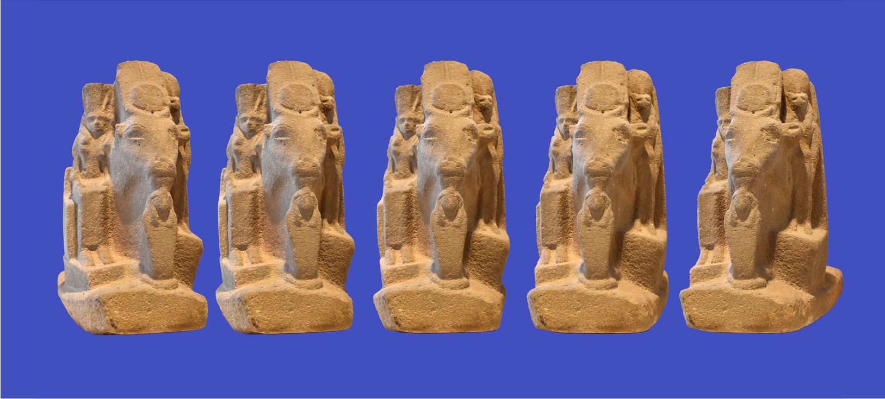
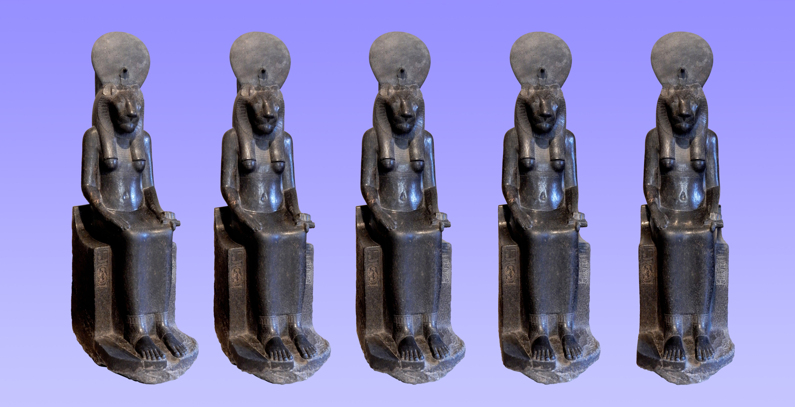
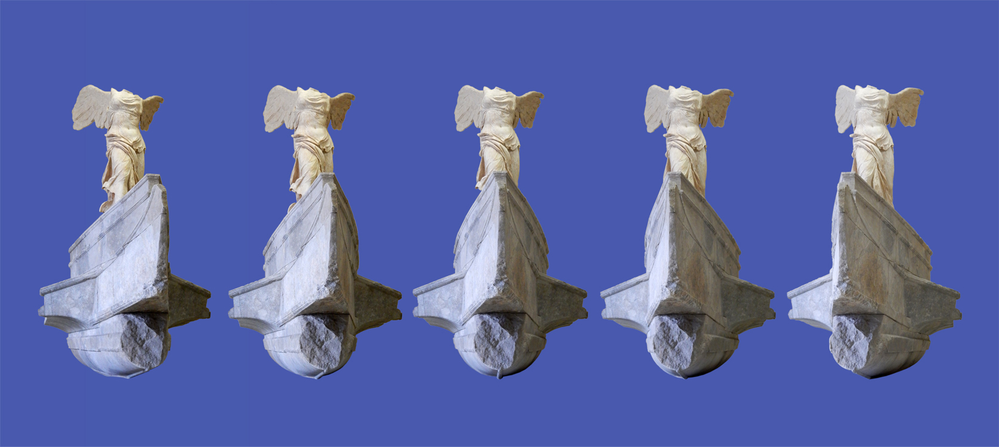
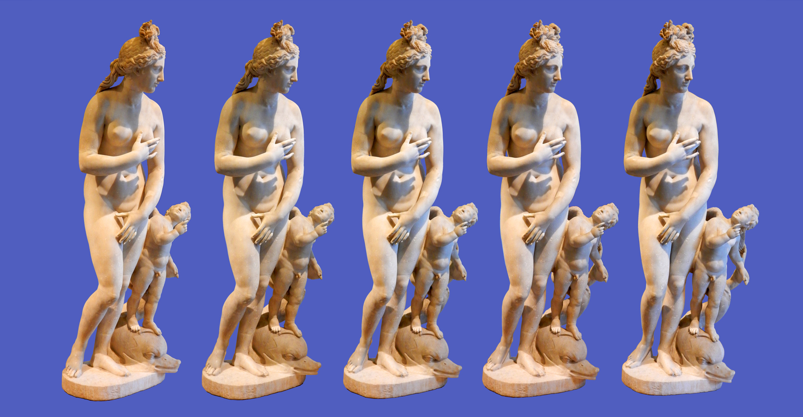
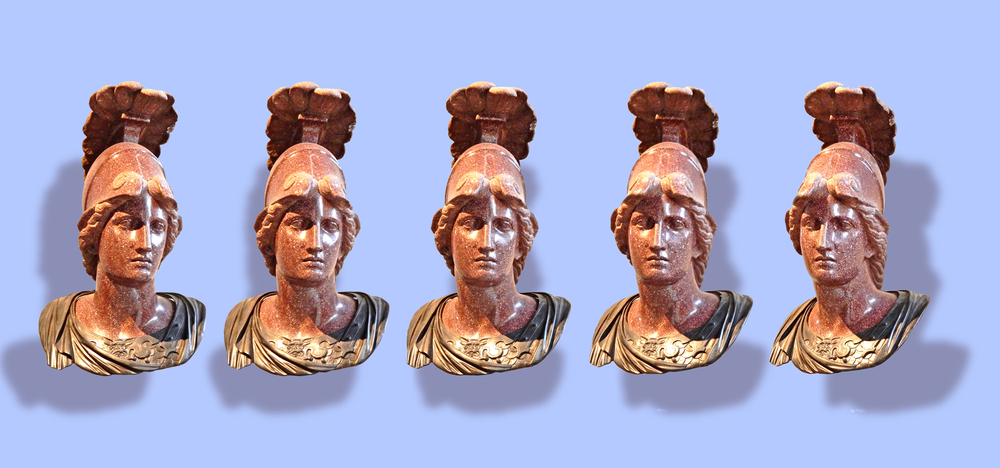
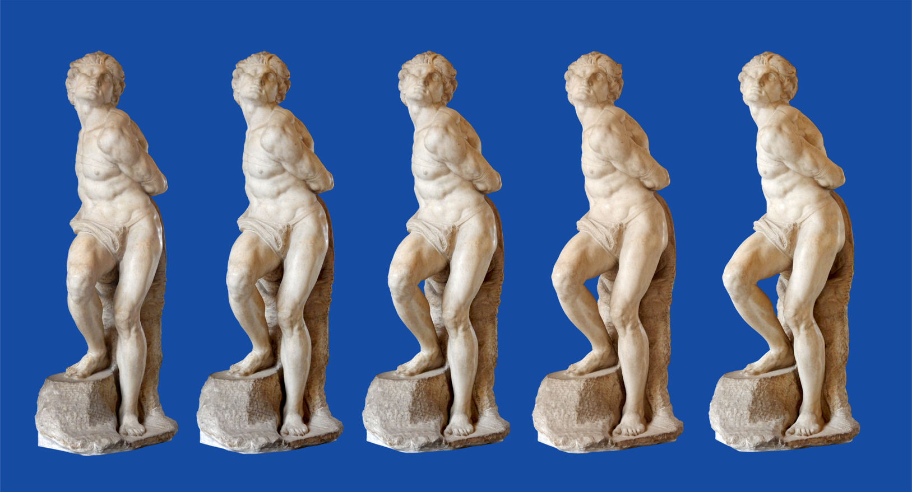
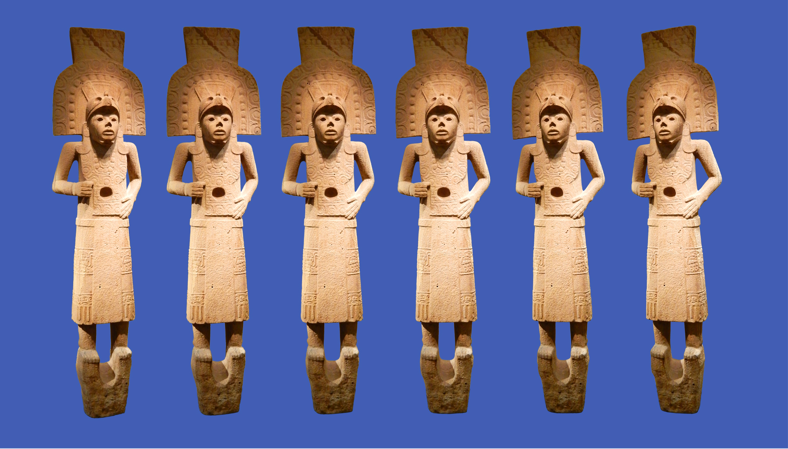
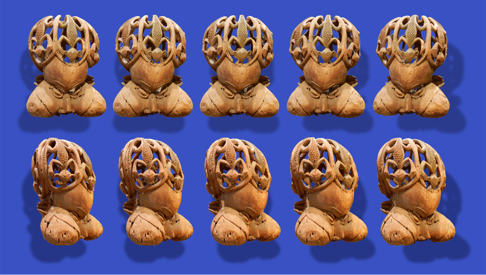

Au musée du Louvre
On peut, en parcourant les allées des salles du musée, prendre suffisamment de clichés des sculptures en tournant autour d’elles, pour ensuite les isoler de leur arrière-plan, les regrouper et créer des stéréogrammes. C’est ainsi qu’a été composé l’ouvrage intitulé « Le Louvre en 3D par le stéréogramme - 100 œuvres sculptées vues en trois dimensions comme on les voit au musée ». Les quelques planches présentées ici sont au format A4 dans le livre.
Cette planche d’initiation permet de comparer plusieurs effets, une fois la vision 3D obtenue, et en sachant la conserver pour passer d'une rangée horizontale à une autre.
La rangée du haut, représentant la tête d'Aphrodite, est constituée de six photos rigoureusement identiques. Si elle était seule sur la planche (ce qu'on peut obtenir en masquant les deux autres rangées), aucun effet de relief ne pourrait se produire. Si on la compare à la deuxième rangée, constituée de têtes d'Apollon identiques entre elles mais un petit peu plus éloignées les unes des autres que ne le sont les têtes d'Aphrodite, on perçoit la rangée Aphrodite plus proche de nos yeux que la rangée Apollon. C'est cette distance entre les images qui crée l'effet de différence de profondeur. C'est aussi pourquoi les ombres de cette deuxième rangée, qui ont été détachées des têtes et éloignées entre elles, paraissent situées sur un plan encore plus éloigné. Mais les têtes restent plates, en 2D.
La troisième rangée montre l'effet produit par des perspectives propres à chaque image associées au traitement indépendant des ombres. On peut aussi remarquer que les têtes de cette rangée, plus resserrées et semblant donc plus proches, paraissent plus petites que celles de la rangée du milieu, ce qui procède du même abus global que nous faisons subir à notre cerveau habitué à voir la taille des choses diminuer en même temps qu'elles s'éloignent de nous. Les têtes des deux rangées ont en effet la même taille et on s'en rend parfaitement compte en regardant l'image simplement en 2D.
La déesse Hathor sous plusieurs formes
Datée de la Basse Époque ( 664-332 avant J.-C. ), cette sculpture représente Hathor, importante divinité égyptienne, épouse du dieu faucon Horus ( parfois tenue pour mère d’Horus, son nom signifiant « maison d’Horus» ). Déesse multiple, principalement de l’amour, de la joie et des festivités, elle est représentée ici sous sa forme animale, la vache portant le disque solaire entre ses cornes, et aussi sous forme de femme et sous les formes des divinités qui lui sont associées, le cobra à tête de femme Meresger et la femme à tête de lionne Sekhmet. Quartzite, hauteur 67 cm.
La déesse Sekhmet
Les statues de la déesse à tête de lionne Sekhmet, retrouvées par dizaines à Karnak, en Égypte, ont été créées à l'origine pour le temple funéraire du roi Aménophis III (1391-1353 avant J.-C., 19e dynastie) à Thèbes, puis furent dispersées. On pense que chacune d’elles serait la conjuration du mal pour un jour de l'année, et peut-être aussi la déléguée d'un sanctuaire d'Égypte, accourue pour protéger le roi. Fille du dieu soleil, elle porte le disque solaire et l’uraeus, le serpent cobra. Elle tient dans sa main gauche l’ânkh, signe de la vie, et de sa bouche sortent les vents du désert. Elle peut être guerrière ou paisible et protectrice. Diorite, hauteur 2,29 m.
La Victoire de Samothrace
Chef-d’œuvre de la sculpture grecque d’époque hellénistique, réalisé vers 190 avant J.-C., cet ensemble fut découvert en 1863 par le diplomate et archéologue français Charles Champoiseau, dans les ruines d’un sanctuaire de l’île, alors turque, de Samothrace, au nord de la mer Égée. À partir de blocs retrouvés épars, la statue ailée fut reconstituée. Ce n’est qu’en 1875 qu’on comprit que les autres blocs formaient l’avant d’un antique navire de guerre appartenant à la même œuvre. La composition représente Niké, déesse de la victoire, se posant à l’avant d’un navire de guerre, sans doute victorieux dans un des nombreux conflits navals de l’époque hellénistique, pour glorifier les vainqueurs. Le socle rectangulaire de l’œuvre n’est pas représenté sur ces images.
Le navire, formé de 16 blocs, est caractéristique de l’époque hellénistique, avec ses importantes caisses de rames formant saillie sur chaque flanc et quelques ouvertures pour le passage des rames visibles tout à l’arrière du flanc gauche. L’ornement de proue a disparu, ainsi que les éperons dont le plus gros, qui prolongeait la quille à l’avant, était destiné à éventrer les navires ennemis. Il a sans doute été réalisé sur l’île de Rhodes. La statue ailée, composée de six blocs, initialement reliés entre eux par des goujons métalliques, fait montre d’une virtuosité dans la représentation des draperies égalée seulement, à cette époque, par celle, deux siècles et demi plus tôt, des frises du Parthénon par le sculpteur Phidias. Si un seul sculpteur, inconnu, est l’auteur de l’œuvre, on peut supposer qu’il venait de l’atelier de Pergame...
La Victoire est vêtue d’une tunique en lin très fine, le chitôn, dont les plis et ondulations plaqués au corps sous l’effet du vent marin et du mouvement d’arrivée de la déesse laissent apparaître ses formes, et un manteau d’un tissus plus épais, l’himation, seulement retenu encore par ces mêmes vents, glisse sur ses genoux. L’orientation du corps et le traitement des drapés indiquent que l’œuvre, dans son sanctuaire d’origine, devait se contempler essentiellement sous une vue trois quarts gauche. La tête, les bras et les pieds n’ont pas été retrouvés, mais certaines pièces archéologiques contemporaines permettent d’émettre des hypothèses pertinentes. L’auteur de cette sculpture a laissé un chef d’œuvre impressionnant de majesté, de grandeur martiale, et un incontestable joyau de l’art grec antique. Le navire est en marbre gris de Lartos (Rhodes), la statue est en marbre blanc de Paros, la hauteur totale est de 5,57 m.
Aphrodite, du type dit « du Capitole »
Œuvre romaine du IIe siècle après J.-C., trouvée à Acqua Traversa, près de Rome. Elle appartient à une série de répliques antiques qui reproduisaient une image célèbre de la déesse Aphrodite, dont l’exemplaire le plus connu est la “Vénus” du musée du Capitole à Rome. Le modèle grec, qui doit dater du IIIe ou du IIe siécle avant J.-C., aujourd’hui perdu, dérive de l’Aphrodite de Cnide créée par Praxitèle au IVe siècle avant J.-C. Si l’Aphrodite de Cnide surprenait déjà, en son temps, par la nudité de la déesse, les copies multiples ont ajouté des touches personnelles des sculpteurs, comme ici la présence du dauphin et d’Éros, une coiffure très sophistiquée et, surtout, une sensualité accentuée par un traitement plus charnel des formes et la pudicité marquée du geste de la déesse, surprise au bain. Marbre, hauteur 1,80 m.
Tête de Minerve dite « Alexandre Mazarin »
Cette tête est décrite en 1653 et 1661 dans la collection du cardinal Mazarin comme un Alexandre, roi de Macédoine de 336 à 323, sans doute par souci de rivaliser avec la célèbre pièce du cardinal de Richelieu, aujourd'hui à Versailles. Identifiée dès son achat par le roi Louis XIV, en 1665, comme une Minerve, déesse romaine assimilée à l’Athéna grecque, l'oeuvre semble en effet reproduire l'Athéna de la collection Mattéi. Elle serait datée du IIe siècle après J.-C. ou du début du XVIIe siècle. Porphyre et buste en métal du XVIIe siècle, hauteur 84,5 cm.
Captif (« l’Esclave rebelle »)
L’un des deux esclaves réalisés entre 1513 et 1515 par Michelangelo Buonarroti, dit “Michel-Ange” (1475-1564), pour le tombeau du pape Jules II mais qui n’ornèrent jamais le tombeau réel, Ce personnage, au physique mûr et brutal, se débat dans une torsion vibrante de tout son être et fut surnommé l’Esclave rebelle. Composition aussi énigmatique que sa contemporaine l’Esclave mourant, cette sculpture figura dans la collection du roi François Ier. Marbre, hauteur 2,09 m.
Sculpture huaxtèque
Datée de la période postclassique récente ( XIVe-XVIe siècle), cette statue provient de la région de Tampico, dans l’État mexicain de Tamaulipas, sur la côte du golfe du Mexique. La très riche sculpture huaxtèque ( ou huastèque ) a produit beaucoup de ces personnages stylisés, très décorés, d’aspect un peu rigide. Pierre, hauteur 1,63 m.
Sculpture bamendou
Provenant d’un des nombreux royaumes du pays bamiléké, au Cameroun, et datant du XVIIIe siècle, cette sculpture, qui pourrait évoquer une armure ou un torse, est un masque royal tukah (tête de kah), à la coiffe ajourée formée de lézards, et aux yeux en amandes surmontant un nez et deux joues gonflées. Bois, h. 60 cm environ.
Le livre :

Le Louvre en 3D par le stéréogramme
100 œuvres sculptées vues en trois dimensions comme on les voit au musée
Christian Ladane
Livre relié sous couverture souple, format A4 italien, 150 pages, novembre 2023
ISBN 979-10-415-1542-4
prix 30€
En vente à la librairie du musée du Louvre et à la librairie Hisler-Even à Metz
Contact : christian.ladane@laposte.net